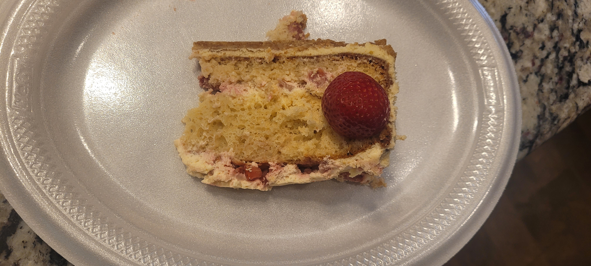

This is a delicious dessert that combines the flavors of strawberry shortcake and cheesecake. It's perfect for any occasion!
- Vanilla Waffers
- Unsalted Butter
- Sugar
- Moist French Vanilla cake Mix
- 8 ounces of cream cheese
- 3 room temperature eggs
- Unsalted Butter
- Sugar
- Non dairy heavy whipping cream
Preheat oven to 350 degrees. Prep your cheesecake dish by spreading the pan with melted butter then shifting baking flour around the inside. This helps removal of your cake. For this portion you will be only using the detatable bottom part of the pan. Grind half a box of vanilla wafers until consistancy is sand like. Mix with sugar and melted butter, press onto the bottom of a cheesecake dish until bottom is fully and evenly covered. Place the pan on a baking rack and bake in the oven for 10 minuetes. When done let cool in the fridge.